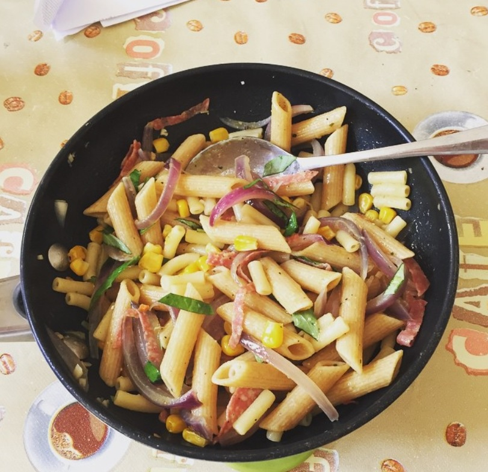
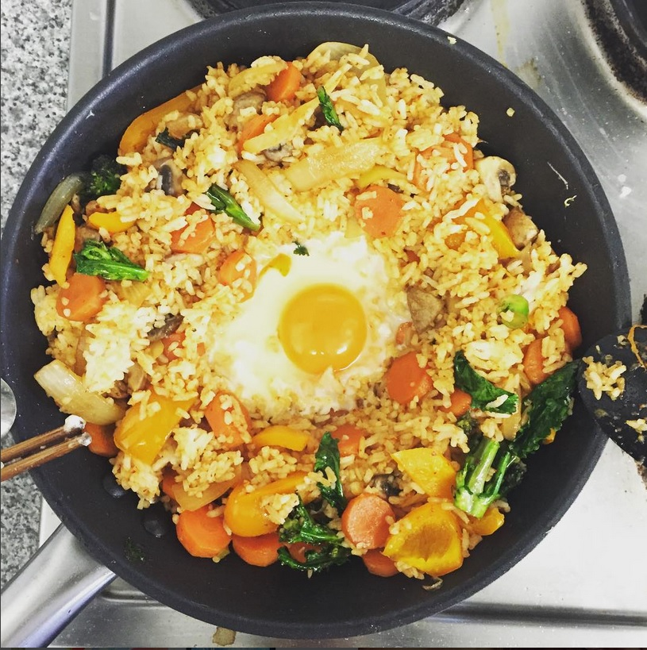

Basics
Soy Sauce Eggs/ Shoyu Tamago
Shoyu Tamago is an essential part of ramen noodles, but it is also delicious with rice and vegetables for a quick lunch, or add to instant noodles for a lazy meal.
Authentic Japanese Soy Sauce Eggs required 4:4:2:1 ratio of water, soy sauce, sake and mirin. However mirin and sake are not standard items in the pantry, hence they are optional in this recipe. The eggs will taste just as delicious, but not as authentic.
Ingredients
- 4 eggs
- Marinade - 620 ml (2 ¾ cup)
- 1 part water
- 1 part soy sauce
- 2 cloves garlic, peeled and crush
- 1 oz ginger, skin on, crushed
- 2 spring onions
- (Optional)
- Mirin
- Sake
- 2 pieces of star anise
Methods
- (Optional) Use a pushpin to create a small hole on the bottom of the eggs for easy peeling
- Boil the eggs for 6 minutes. Stir the pan in the first 2 minutes for the yolk to set
-
- Put all of the ingredients of the marinade into a sauce pan
- Bring to a boil over high heat
- Remove and cool to room temperature
- Place the eggs together with the marinade in an airtight food container and let the eggs marinade over night
- The longer the eggs are left in the marinade, the stronger the flavour
The perfect Al Dente Pasta
Pasta is easy to cook, or it supposed to be easy to cook. Although I have eaten countless soggy pasta with pre bought sauce before, and that was dark dark time with some very sad meals. So dear lovely friends of mine, here are easy steps to upgrade your pasta game.

Ingredients
- Pasta
- Olive oil
- For the sauce:
- Onions
- Garlic
- Herbs and spices
- Vegetables of choice, however tomatoes, peppers,carrots and mushrooms are the classic combination. For more adventurous people out there, Bramley Apple ( peak season on August and July) and soft cheese are my favourite
Methods
- Set a large pan from medium to high
- Add pasta and add some BOILING water
- Season the pasta, and a dash of olive oil so the pasta will not stick together
- Stir every 3-5 minutes
- To check if the pasta is cook (usually check 2-3 minutes before the pasta is done, according to t he instruction behind the package):
- Uncook pasta usually taste starchy (like raw potatoes), and hard in the middle. If you bit half way you could see the white starch line
- Hence add another 2 minutes to boiling the pasta. Keep stiring occasionally
- Drain the pasta immediate after done, place the colander on top of the empty pan to catches water
For the sauce:
- Add olive oils to a hot pan, add onions and brown it
- When the onions are half way cook(roughly 3 minutes), add garlic, stir for another 2 minutes. Make sure it does not burn
- If use meat, add thinly chopped/ or minced meat at this stage. Still keep the pan at medium heat
- Gradually add the vegetables of choice. Hardest vegetables first as they takes longer to cook ( so carrots first, then peppers, then mushroom)
- Add herbs and spices: Mixed herbs, Oregano, Marjoram, Basil, Paprika etc are some that usually go well with pasta. Although curry powder with macaroni cheese is amazing!
- Add a cup of stock, or half a stock cube and a cup of water
- Turn down the heat and let the pan shimmer until everything are cook and the sauce thicken, usually 5-10 minutes
- Bolognese sauce should be shimmered for 30 minutes and over, and canned tomatoes are usually used
- Toss the pasta into the sauce for another 2-3 minutes
- Serve with some cheese and basil ( if you feeling fancy)
Korean ( or not) Fried Rice

Fried rice is perfect with leftover rice, as the rice grains tends to be harder, hence more crispy when fried.
- Leftover rice
- Onion
- Protein
- Vegetables
- Salt, soy sauce or fish sauce
- For the Korean Fried Rice
- Gochujang
- Eggs
- Soy sauce
- Sugar or honey
- Water or apple juice to make the sauce more runny
Methods
- Fried the onions in medium heat with plenty of oils
- Add the protein
- Add the vegetables
- Add the rice
- Add your sauce of choice
- Just let the rice fried in medium heat for around 3-5 minutes
- Soft vegetables such as peas and sweetcorn can be add after the rice
- Add all of the ingredients in a bowl, except the eggs
- Pour into the hot fried rice pan
- Stir until all the rice are coated
- Crack an egg in the middle
- Add peppers to taste
- Take off heat and mix the eggs with the rice, the heat of the rice will cook the eggs
- Eaten best with a spoon, straight from the pan